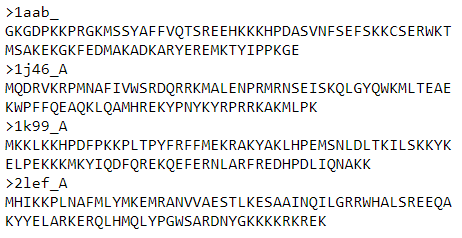
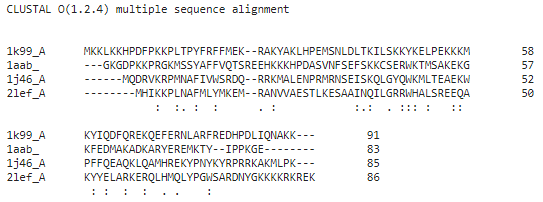
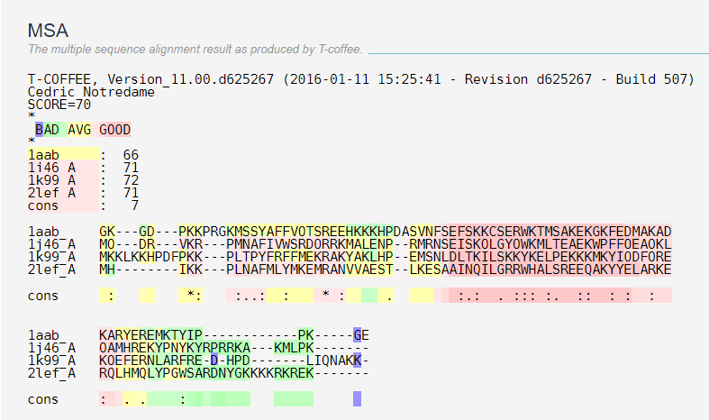
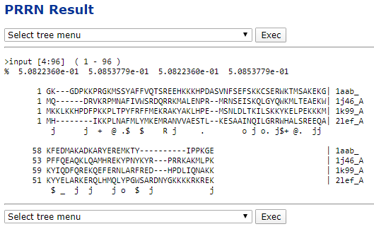
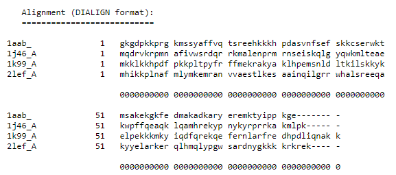
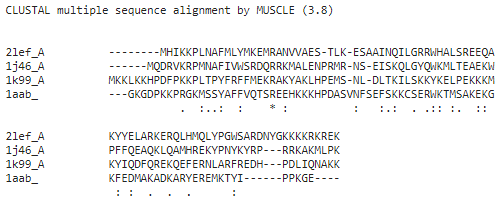
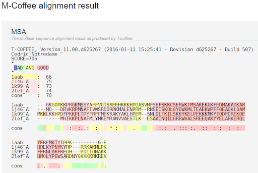
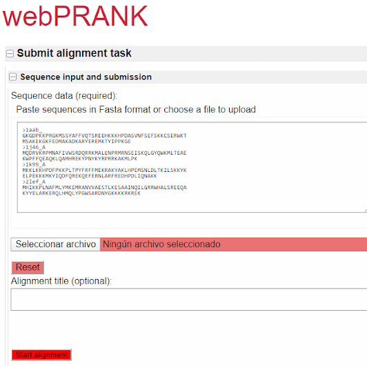
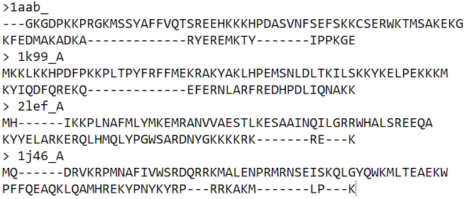

Tools for multiple sequence alignment¶
One of the main characteristics that sequence alignment tools present is the type of heuristic algorithm that they implement to achieve their objective. During this document the explanation and differences of each of these techniques will be shown along with certain examples of tools that make use of them.
For all of examples we will use as input the file BB11001.tfa whose content is shown below:

1. Progressive alignment construction¶
This is the most widely used approach for multiple sequence alignments. It uses a heuristic search known as a progressive technique, also called a hierarchical or tree method.
Progressive alignment builds up a final MSA by combining pairwise alignments beginning with the most similar pair and progressing to the most distantly related. All progressive alignment methods require two stages: a first stage in which the relationships between the sequences are represented as a tree, called a guide tree, and a second step in which the MSA is built by adding the sequences sequentially to the growing MSA according to the guide tree.
The main problem is that when mistakes are made at any stage of the growth of the MSA, these mistakes propagate to the end result. However, they have the advantage that they are efficient enough to implement them on a large scale for many sequences (from 100 to 1000).
The best-known tool examples for this system are the Clustal family, T-Coffee and PSAlign (semi-progressive):
Clustal: This is the most popular progressive alignment method currently. It makes use of seeded guide trees and HMM profile-profile techniques to generate alignments between three or more sequences. Produces biologically significant multiple sequence alignments of divergent sequences. Evolutionary relationships can be seen through Cladograms or Philograms.

T-Coffee: It is slower than Clustal and its derivatives but generally produces more accurate alignments for distantly related sequence sets. T-Coffee calculates pairwise alignments by combining the direct alignment of the pair with indirect alignments that aligns each sequence of the pair to a third sequence. It uses the output from Clustal as well as another local alignment program LALIGN, which finds multiple regions of local alignment between two sequences. The resulting alignment and phylogenetic tree are used as a guide to produce new and more accurate weighting factors.

PSAlign: Tool that implements a semi-progressive method that improves the quality of the alignment and does not use a lossy heuristic while running in polynomial time.
2. Iterative methods¶
These work similarly to progressive methods but repeatedly realign the initial sequences and add new sequences to the growing MSA. Their main feature is that they can revert to previously calculated pairwise alignments or sub-MSAs that incorporate subsets of the query sequence as a means of optimizing an overall objective function such as finding a high-quality alignment score.
The best-known tools that make use of this approach are PRRN / PRRP, CHAOS / DIALIGN and MUSCLE.
PRRN / PRRP: Uses a scaling algorithm to optimize your MSA alignment score and iteratively corrects both alignment weights and locally diverging or “hollow” regions of the growing MSA. PRRP works best when refining a previously built alignment by a faster method.

CHAOS / DIALOG: Take an unusual approach of focusing closely on local alignments between subsegments or sequence motifs without introducing a gap penalty. Alignment of the individual motifs is accomplished with a matrix representation similar to a dot matrix graph in a pairwise alignment. An alternative method is implemented that uses fast local alignments as anchor points or “seeds” for a slower global alignment procedure.

MUSCLE: This is a log-expectation multiple sequence alignment that improves progressive methods with a more accurate distance measurement to evaluate the relationship of two sequences. The distance measurement is updated between the iteration stages.

3. Consensus methods¶
Consensus methods attempt to find the optimal multiple sequence alignment given multiple different alignments of the same set of sequences. There are two commonly used consensus methods:
M-COFFEE: It is part of the T-Coffee distribution. The specificity of M-Coffee is that rather than computing a multiple sequence alignment on its own, it uses other packages to compute the alignments. It then uses T-Coffee to combine all these alignments into one unique final alignment. In practice, this means that if you are using several packages to generate your alignments, you can combine these alignments rather than choosing one of them. In practice we have shown that the combined alignments are on average better than the initial alignments. Furthermore, the regions where they agree tend to be correctly aligned.

MergeAlign: is a program that constructs a consensus multiple sequence alignment from multiple independent alignments. Using dynamic programming it efficiently combines individual multiple sequence alignments to generate a consensus that is maximally representative of all constituent alignments. Using Merge Align to combine multiple sequence alignments generated using different matrices of amino acid substitution produces multiple sequence alignments that are more robust and more accurate than alignments generated using only a single matrix of amino acid substitution.
5. Phylogeny-aware methods¶
Most multiple sequence alignment methods try to minimize the number of insertions/deletions (gaps) and, as a consequence, produce compact alignments. This causes several problems if the sequences to be aligned contain non-homologous regions, if gaps are informative in a phylogeny analysis. These problems are common in newly produced sequences that are poorly annotated and may contain frame-shifts, wrong domains or non-homologous spliced exons. Some tools for this system are the following:
PRANK: It’s based on an algorithm that treats insertions correctly and avoids over-estimation of the number of deletion events. In addition, PRANK borrows ideas from maximum likelihood methods used in phylogenetics and correctly takes into account the evolutionary distances between sequences. Lastly, PRANK allows for defining a potential structure for sequences to be aligned and then, simultaneously with the alignment, predicts the locations of structural units in the sequences. Let see an example of this tool:

PAGAN: It’s based on the phylogeny-aware progressive alignment algorithm and uses graphs to describe the uncertainty in the presence of characters at certain sequence positions. However, graphs also allow describing the uncertainty in input sequences and modelling e.g. homopolymer errors in Roche 454 reads, or representing inferred ancestral sequences against which other sequences can then be aligned.
ProGraphMSA: It’s a state-of-the-art multiple sequence alignment tool which produces phylogenetically sensible gap patterns while maintaining robustness by allowing alternative splicings and errors in the branching pattern of the guide tree. This is achieved by incorporating a graph-based sequence representation and combines it with the advantages of the phylogeny-aware algorithm in Prank. Further, we account for variations in the substitution pattern by using estimated amino acid frequencies and by implementing context-specific profiles.
6. Motif finding¶
A motif is a sequence pattern that occurs repeatedly in a group of related protein or DNA sequences and is often associated with some biological function. Motif finding, also known as profile analysis, is a method of locating sequence motifs in global MSAs that is both a means of producing a better MSA and a means of producing a scoring matrix for use in searching other sequences for similar motifs. A variety of methods for isolating the motifs have been developed, but all are based on identifying short highly conserved patterns within the larger alignment and constructing a matrix similar to a substitution matrix that reflects the amino acid or nucleotide composition of each position in the putative motif. The alignment can then be refined using these matrices. In standard profile analysis, the matrix includes entries for each possible character as well as entries for gaps. Alternatively, statistical pattern-finding algorithms can identify motifs as a precursor to an MSA rather than as a derivation. In many cases when the query set contains only a small number of sequences or contains only highly related sequences, pseudocounts are added to normalize the distribution reflected in the scoring matrix.
MEME(Multiple EM for Motif Elicitation): is a tool for discovering motifs in a group of related DNA or protein sequences. It’s represents motifs as position-dependent letter-probability matrices which describe the probability of each possible letter at each position in the pattern. Individual MEME motifs do not contain gaps. Patterns with variable-length gaps are split by MEME into two or more separate motifs. This tool takes as input a group of DNA or protein sequences (the training set) and outputs as many motifs as requested. It uses statistical modeling techniques to automatically choose the best width, number of occurrences, and description for each motif.
7. Non-coding multiple sequence alignment¶
Non-coding DNA regions, especially TFBSs (Transcription factor binding site), are rather more conserved and not necessarily evolutionarily related, and may have converged from non-common ancestors. Thus, the assumptions used to align protein sequences and DNA coding regions are inherently different from those that hold for TFBS sequences. Although it is meaningful to align DNA coNon-coding DNA regions, especially TFBSs, are rather more conserved and not necessarily evolutionarily related, and may have converged from non-common ancestors. Thus, the assumptions used to align protein sequences and DNA coding regions are inherently different from those that hold for TFBS sequences. Although it is meaningful to align DNA coding regions for homologous sequences using mutation operators, alignment of binding site sequences for the same transcription factor cannot rely on evolutionary related mutation operations. Similarly, the evolutionary operator of point mutations can be used to define an edit distance for coding sequences, but this has little meaning for TFBS sequences because any sequence variation has to maintain a certain level of specificity for the binding site to function. This becomes specifically important when trying to align known TFBS sequences to build supervised models to predict unknown locations of the same TFBS. Hence, Multiple Sequence Alignment methods need to adjust the underlying evolutionary hypothesis and the operators used as in the work published incorporating neighbouring base thermodynamic information regions for homologous sequences using mutation operators, alignment of binding site sequences for the same transcription factor cannot rely on evolutionary related mutation operations.
EDNA (Energy Based Multiple Sequence Alignment): It is a multi-sequence alignment (MSA) program to align sequences of transcription factor binding sites (TFBS). The novelty of this software is scoring using a thermodynamically generated null hypothesis. The method is well suited for aligning often unrelated sequences.